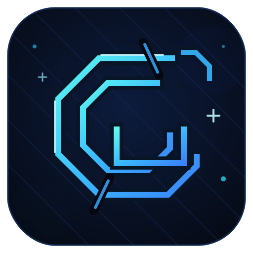
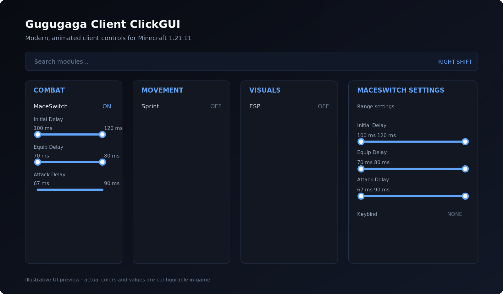

Aerial Mace Sequence
Non-blocking state machine: equips a chestplate, switches to the mace and strikes a player about three blocks below — with randomized, configurable delays.

Modern Minecraft Client for 1.21.11 — an automated aerial mace sequence, a polished ClickGUI and a fully customizable HUD.
Real modules, real settings — every control in the GUI writes straight into the client configuration.
Non-blocking state machine: equips a chestplate, switches to the mace and strikes a player about three blocks below — with randomized, configurable delays.
Panels for Combat, Visuals, Movement, Misc and Client Settings with search, two-handle range sliders, keybind capture and tooltips.
FPS, coordinates, speed, active modules and a watermark — with per-element settings and a full drag-and-drop HUD editor (F8).
Upload your client config and load configs from other players in-game (F9). Rate-limited and automatically pruned on the server.
Create, save, load, rename and delete config profiles. Rotating backups protect your settings from corruption.
Accent, background, panel and text colors are all configurable in-game — the GUI follows your theme everywhere.
A central friends list (F7) with an "Ignore Friends" combat setting, so friends are never targeted.
Animated toasts for module toggles, profile actions, cloud results and keybind conflicts — FPS-independent and unobtrusive.
Press Right Shift in game. The ClickGUI opens with draggable panels, live search and settings that are bound directly to the client's real configuration.

The ClickGUI with category panels, module list and search.
Every element can be moved, scaled, recolored, renamed or hidden — and everything persists.
Client name and version, always in reach.
Live frames per second with optional decimals.
Your position at a glance.
Movement speed in blocks per second.
See exactly what is enabled right now.
Full editor with per-element settings and reset (F8).